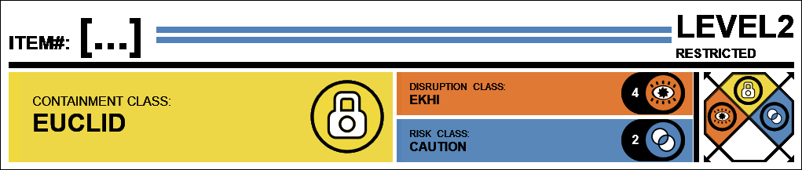

<Begin Transcript> Dr. ██████: Please describe your experience with SCP-[...]. Subject: It's like this damn voice won't leave me alone every time I get my Centrelink payment. It's always the same thing, 'Get off welfare, get into work.' I can't make it stop, and it's driving me crazy. Dr. ██████: Can you identify the voice? Subject: No, it's androgynous. It's like it's stuck in my head, judging me. Dr. ██████: Thank you for your cooperation. We will do our best to help you. <End Transcript>
<Start of Log> Date: [Redacted] Researchers: Dr. █████, Dr. ████, and Research Assistant ████ Procedure: In an attempt to understand the potential effects of combining SCP-[...]-HZIV and SCP-[...]-CL, a controlled experiment was conducted within Bio-Research Site-██'s containment chamber. A sample of SCP-[...]-CL was introduced to a contained instance of SCP-[...]-HZIV, and the resulting interaction was observed. Results: Upon contact, the two viral strains exhibited a unique reaction. The SCP-[...]-CL strain appeared to 'overwrite' the SCP-[...]-HZIV strain, resulting in a new, hybrid virus. This hybrid virus, designated SCP-[...]-HYB, displayed characteristics of both parent strains but with heightened anomalous properties. Infected subjects exposed to SCP-[...]-HYB experienced auditory hallucinations similar to those caused by the original strains, but with increased intensity and frequency. The voices create a disturbing, multilingual chorus. The phrase "Your reliance is a burden, work to contribute" was repeatedly uttered, causing severe distress to the subjects. Furthermore, SCP-[...]-HYB demonstrated an increased transmission rate. Unlike the parent strains, which vacate the host after a week of non-receipt of welfare, SCP-[...]-HYB remains in the host's body indefinitely, continuously seeking new hosts through close contact. This makes containment and treatment significantly more challenging. Conclusion: The combination of SCP-[...]-HZIV and SCP-[...]-CL results in a more aggressive and contagious anomalous virus. Further research is required to develop effective countermeasures and containment protocols for SCP-[...]. <End of Log>